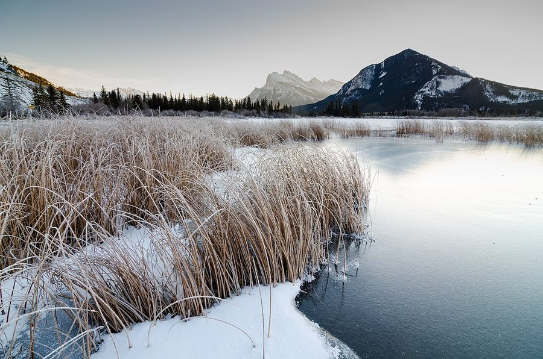
버밀리언 레이크
Vermilion Lakes
- 편도
- 5분
- 체류
- 30분
- 추천
- 필수
밴프 시내에서 5분 거리의 습지형 호수 세 개. 도로가 호숫가를 따라 나 있어 차를 대고 바로 물가에 선다.
기대잔잔한 수면에 통째로 비치는 마운트 런들. 일출과 일몰 모두 강하다.
CANADIAN ROCKIES · BASE: BANFF · 2026
옐로나이프에서 캘거리로 내려온 뒤 사흘. 렌터카 한 대, 어른 넷.
전부 갈 수는 없으니, 무엇을 버릴지 고르기 위한 목록.
10월 12–13일이 마감선
모레인 레이크 도로, 두 호수 셔틀, 컬럼비아 아이스필드, 타카카우 폭포 진입로, 존스턴 캐니언이 전부 10/12 또는 10/13에 시즌을 닫는다. 이 일정은 그 4–6일 전이라 아슬아슬하게 전부 열려 있다. 아래에서 마감 표시가 붙은 곳이 여기 해당한다.
ZONE 01 · Banff Townsite
밴프에서 편도 0–20분 9곳
숙소에서 나와 30분 안에 닿는다. 이른 아침과 저녁 자투리 시간에 쓰는 구역.

Vermilion Lakes
밴프 시내에서 5분 거리의 습지형 호수 세 개. 도로가 호숫가를 따라 나 있어 차를 대고 바로 물가에 선다.
기대잔잔한 수면에 통째로 비치는 마운트 런들. 일출과 일몰 모두 강하다.
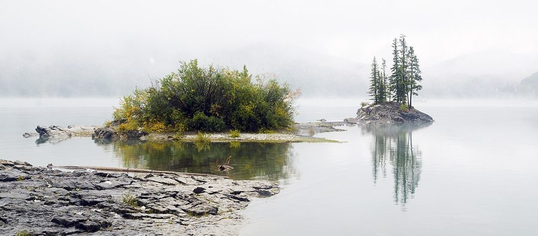
조건유람선 10/12 종료Lake Minnewanka
길이 28km로 밴프 최대 호수. 호숫가까지 포장도로가 이어지고 주변을 도는 루프 드라이브가 있다.
기대큰뿔양이 주차장까지 내려온다. 로키에서 야생동물을 가장 확실하게 보는 곳.
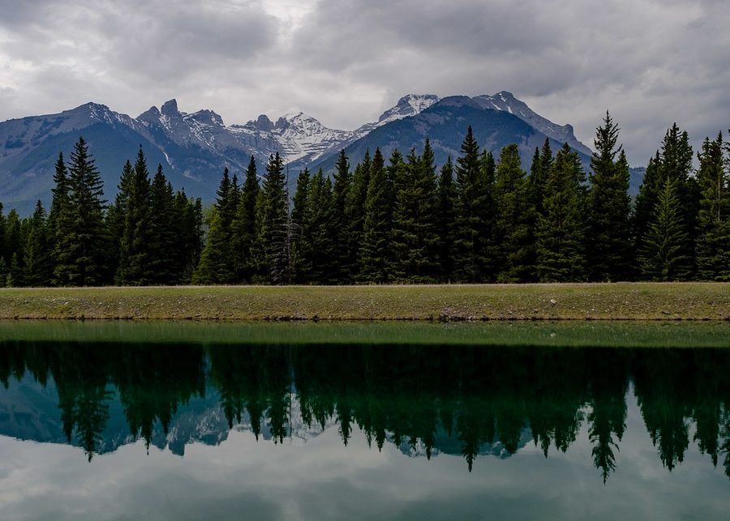
Two Jack Lake
미네완카 루프 도중에 있는 작은 호수. 주차장이 물가에 바로 붙어 있다.
기대바람 없는 아침이면 런들산이 수면에 통째로 뒤집혀 찍힌다.
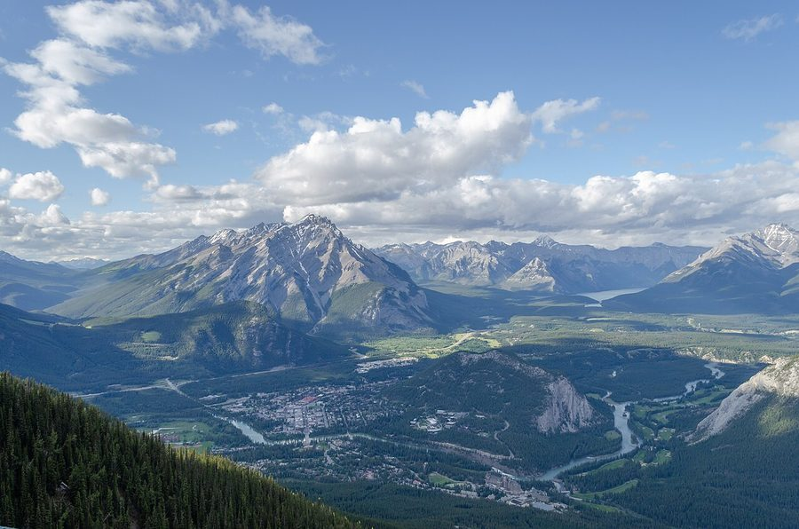
조건9–21시 · 10/12까지Banff Gondola
해발 2,281m 설퍼산 정상까지 8분. 정상에 목재 산책로와 전망 데크가 있다.
기대여섯 개 산맥과 밴프 시내가 한 번에 들어온다. 흐리면 값어치가 급락하니 날씨를 보고 정한다.
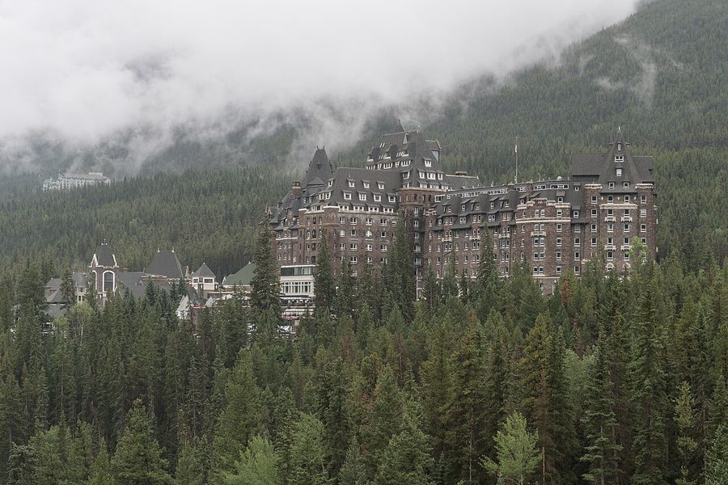
Surprise Corner
페어몬트 밴프스프링스 호텔을 정면으로 보는 도로변 전망대. 주차 후 1분이면 도착한다.
기대숲 위로 솟은 성 같은 호텔. 밴프에서 가장 많이 찍히는 앵글이다.
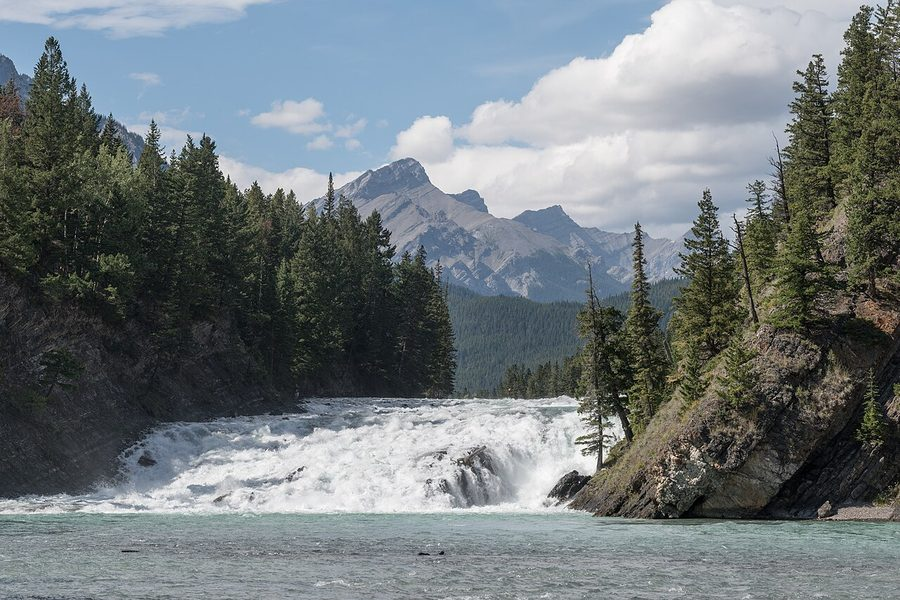
Bow Falls
밴프 시내 옆 보우강의 넓고 낮은 폭포. 강변 데크에서 바로 내려다본다.
기대낙차보다 폭이 인상적이다. 자투리 20분에 채우기 좋다.
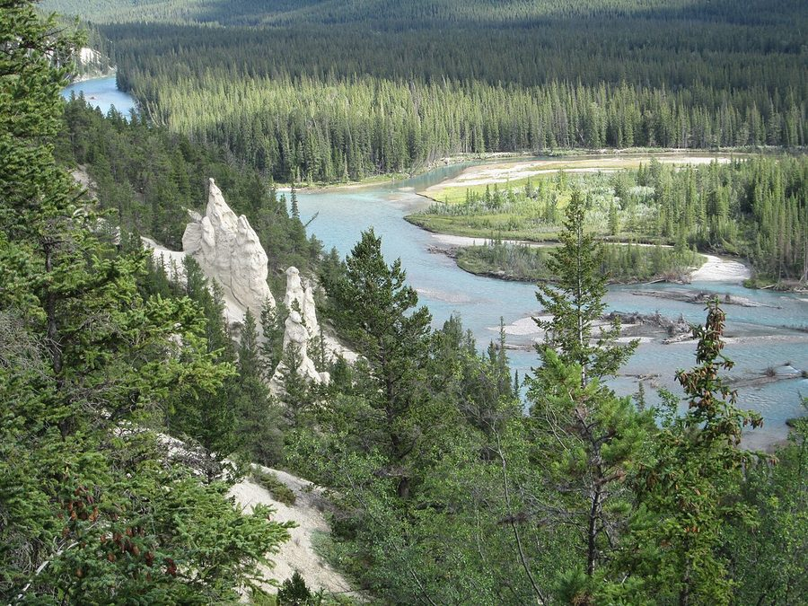
Banff Hoodoos
침식에 살아남은 석회암 기둥 지형. 터널마운틴 기슭을 도는 왕복 4.8km 완만한 길 끝에 있다.
기대기둥보다 걷는 내내 펼쳐지는 보우 밸리 전경이 볼거리다.
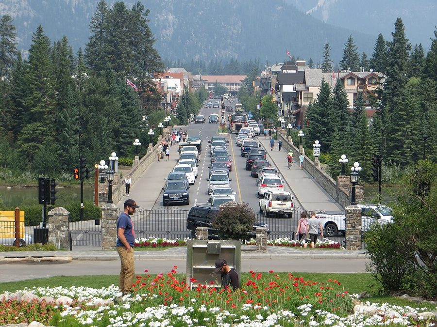
Banff Avenue
밴프의 메인 거리. 식당과 상점이 모두 이 한 줄에 몰려 있다.
기대거리 끝에 캐스케이드 산이 정면으로 서 있다. 저녁 시간을 소화하는 용도.
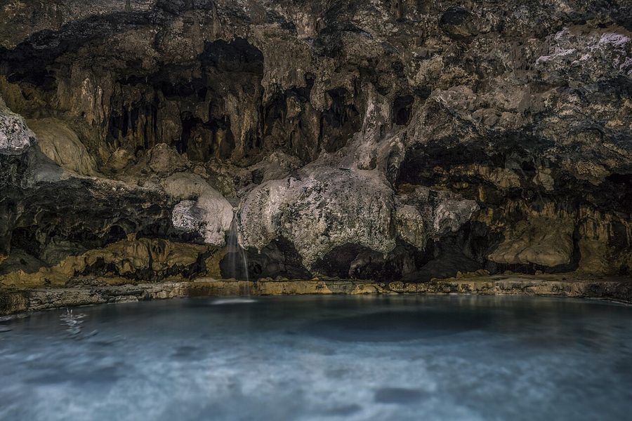
Cave and Basin NHS
1883년 온천이 발견되며 캐나다 국립공원 제도가 시작된 자리. 실내 전시와 짧은 데크로 구성된다.
기대경관이 아니라 역사를 보는 곳. 비나 눈으로 야외가 막혔을 때의 대안.
ZONE 02 · Bow Valley Parkway
밴프에서 편도 20–50분 4곳
밴프에서 레이크루이스로 가는 옛 도로. 이동하면서 소화하는 구역이라 시간이 거의 공짜다.
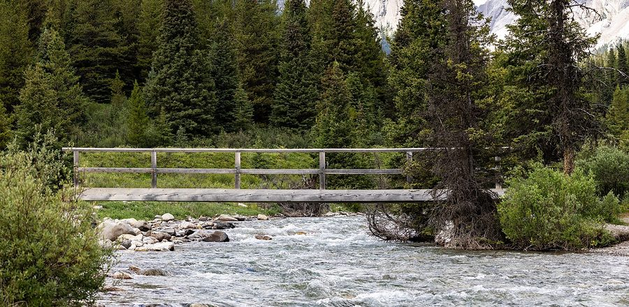
마감10/12 이후 3개월 폐쇄Johnston Canyon
협곡 벽에 볼트로 매달린 철제 캣워크를 따라 폭포까지 들어간다. 하단폭포 왕복 2.2km(1시간), 상단폭포까지 5.2km(2시간).
기대발밑으로 급류가 지나가는 캣워크 자체가 핵심이다. 밴프에서 가장 인기 있는 트레일.
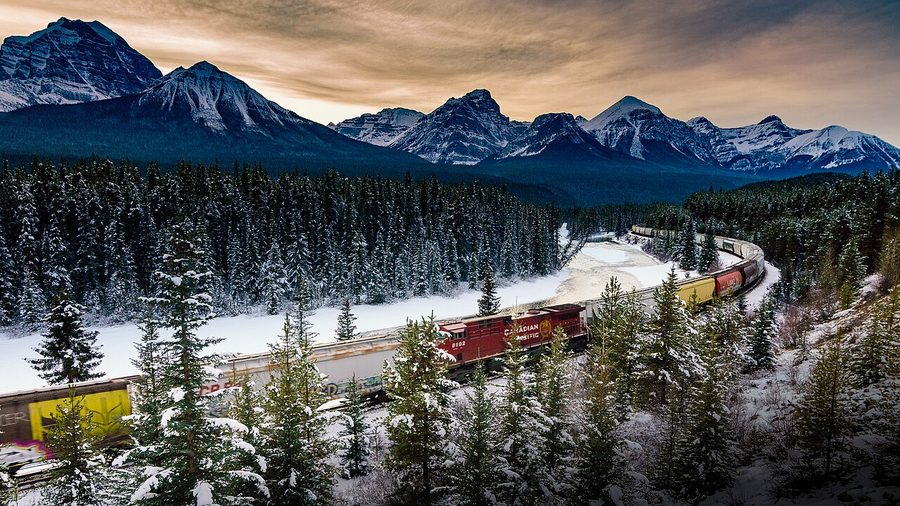
Morant's Curve
보우강이 크게 휘는 지점을 철길이 따라 도는 도로변 뷰포인트.
기대캐나다 철도 홍보사진의 그 앵글. 화물열차가 지나가면 대박이고, 안 지나가도 경관은 남는다.
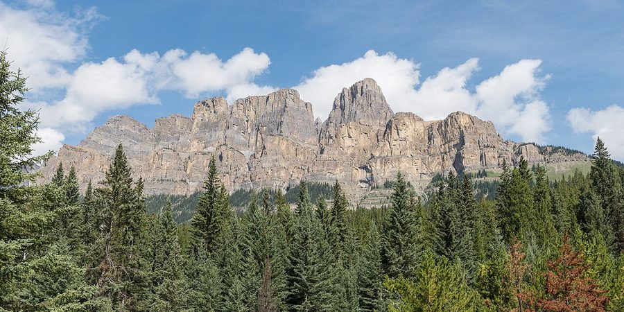
Castle Mountain
성벽처럼 층층이 깎여 나간 2,766m 암벽. 도로변에 전망 주차장이 있다.
기대이름 그대로 요새 같은 실루엣. 지나는 길에 5분이면 된다.
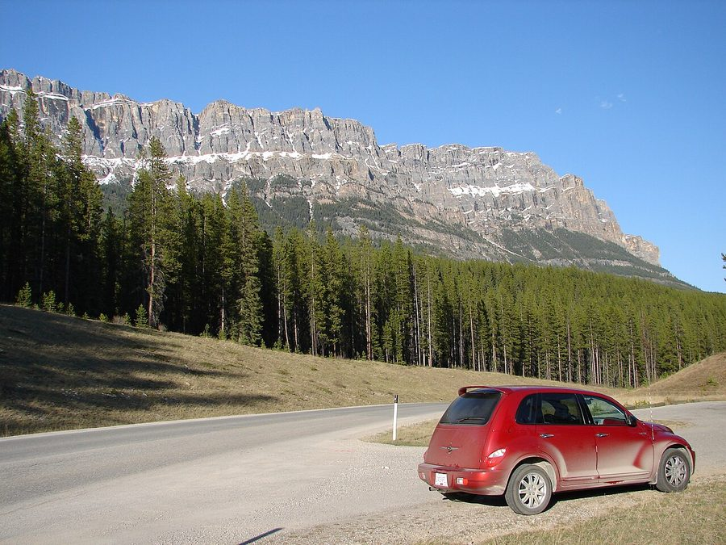
Bow Valley Parkway · Hwy 1A
밴프와 레이크루이스를 잇는 옛 도로. 고속도로 대신 이 길로 가면 같은 이동에 경관이 딸려온다.
기대로키에서 야생동물 조우 확률이 가장 높은 구간. 엘크와 사슴, 운이 좋으면 곰.
ZONE 03 · Lake Louise
밴프에서 편도 45분–1시간 8곳
이번 여행의 중심. 호수 두 개가 모두 오전 빛이라 아침을 여기에 써야 한다.
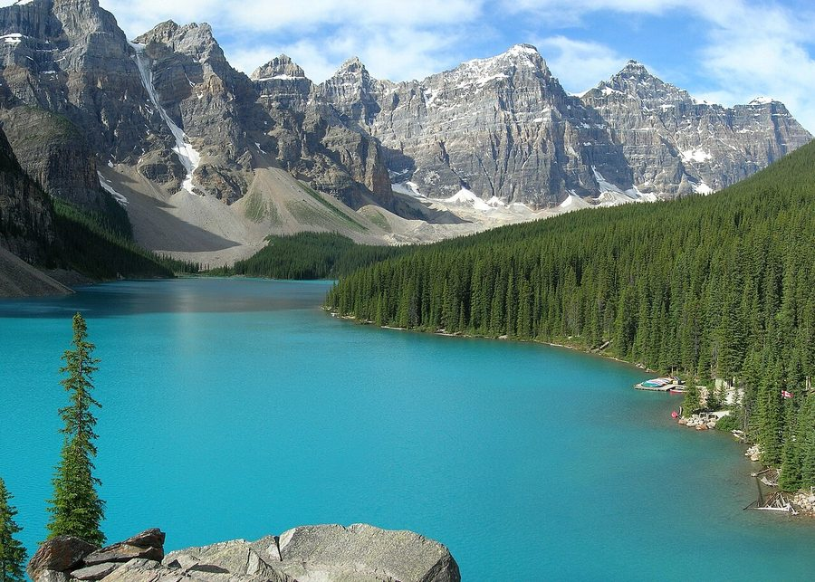
마감10/12 마감 · 셔틀 예약 필수Moraine Lake
텐피크스 열 개 봉우리 아래 놓인 빙하호. 개인 차량 진입이 금지돼 셔틀이나 허가받은 사설 버스로만 간다.
기대구 20달러 지폐에 실렸던 그 장면. 록파일 전망대까지 5분이면 오른다.
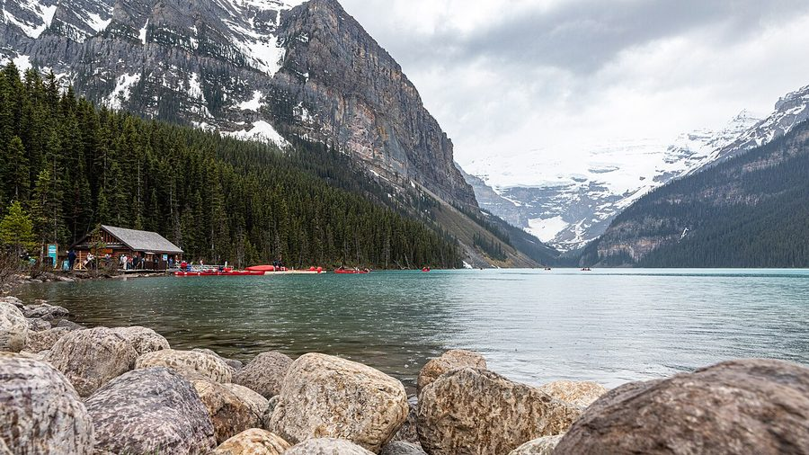
조건주차 $42/일 · 셔틀 10/12 마감Lake Louise
호수 정면에 빅토리아 빙하가 걸려 있고 그 앞에 페어몬트 샤토가 선 로키의 상징.
기대호반 산책로 왕복 4km가 완전 평지라 누구나 걷는다. 오전 빛이 압도적으로 좋다.
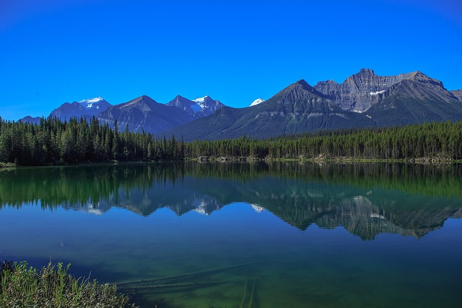
Herbert Lake
아이스필즈 파크웨이 초입의 작은 무료 호수. 주차장이 물가에 붙어 있다.
기대바람만 없으면 반영이 완벽하다. 관광객이 거의 없어 조용하다.
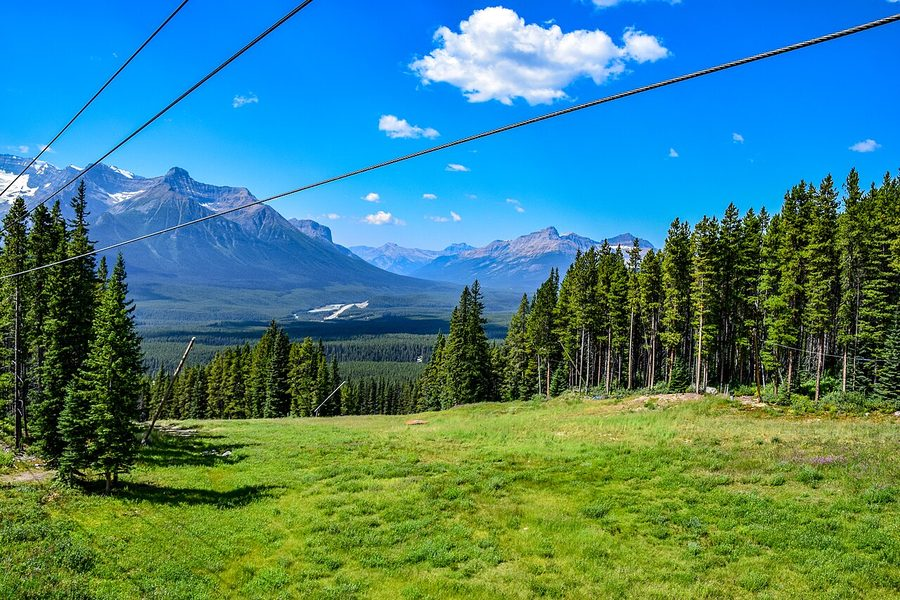
조건9–16:30 · 10/12 마감Lake Louise Gondola
스키장 곤돌라를 여름·가을에 관광용으로 운행한다. 건너편 산에서 레이크루이스 계곡을 마주 본다.
기대회색곰 관찰 확률이 로키에서 가장 높은 곳 중 하나.
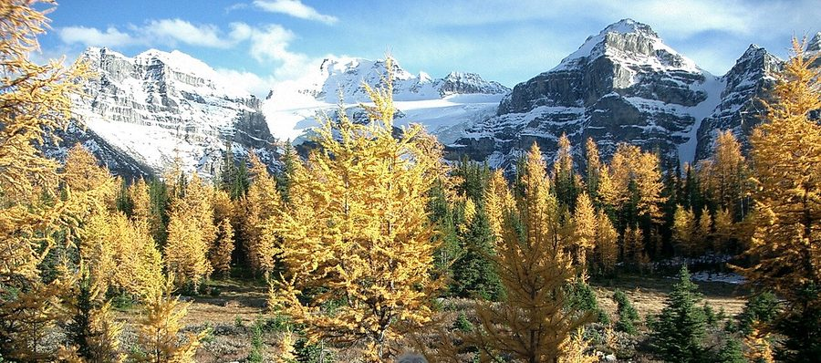
마감단풍 절정 지남 · 눈 가능Larch Valley & Sentinel Pass
모레인 레이크에서 시작하는 왕복 11km, 고도 725m 하이킹.
기대낙엽송이 계곡 전체를 금색으로 덮는 로키 최고의 단풍 명소. 다만 절정은 9/20–10/5이다.
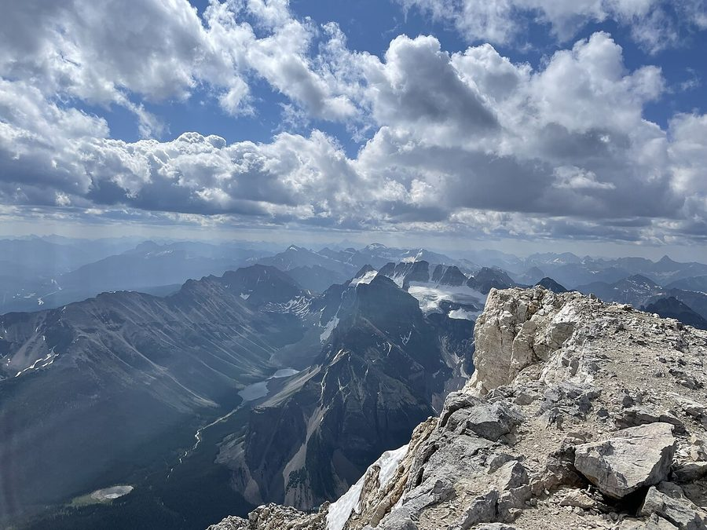
Consolation Lakes
모레인 레이크 록파일 뒤에서 시작하는 왕복 6km, 고도 65m의 평탄한 길.
기대너덜 계곡 끝의 조용한 호수. 곰 활동 구역이라 네 명 이상 함께 걷는 것이 권장된다.
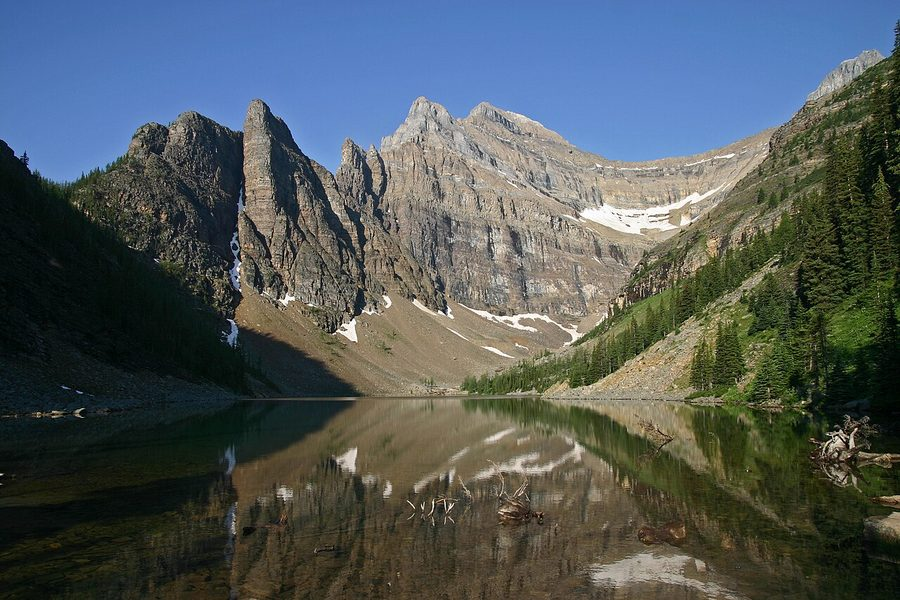
마감티하우스 10월 초 폐점Lake Agnes
레이크 루이스에서 절벽을 올라 닿는 왕복 7km, 고도 400m 산정 호수.
기대'구름 속의 호수'라 불리는 분지 호수와 1901년부터 운영된 티하우스.
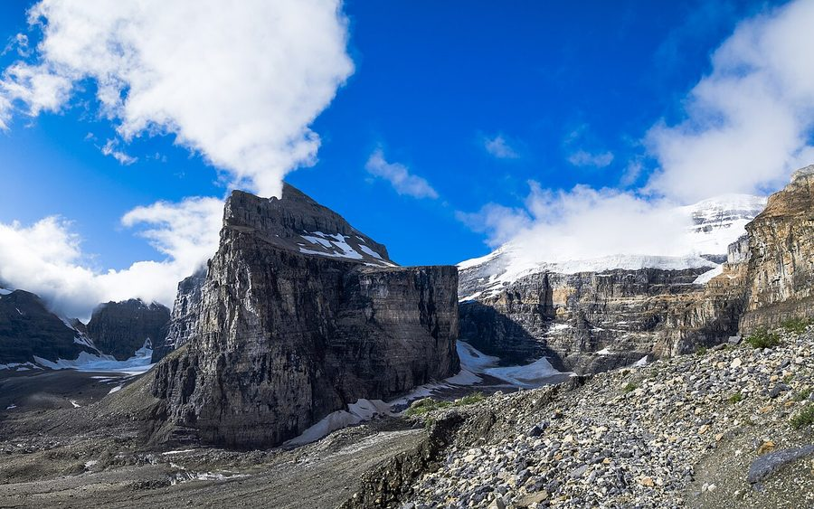
마감10월 중순부터 눈사태 위험Plain of Six Glaciers
레이크 루이스 호반 산책로를 그대로 이어 빙하 앞까지 파고드는 왕복 13.8km.
기대빅토리아 빙하 바로 아래에 선다. 낙빙 소리가 계곡에 울린다.
ZONE 04 · Yoho NP · BC
밴프에서 편도 1시간 10분–1시간 30분 4곳
레이크루이스에서 서쪽으로 30분. 절경 밀도가 가장 높은 구역이고 오후 빛이 유리하다.
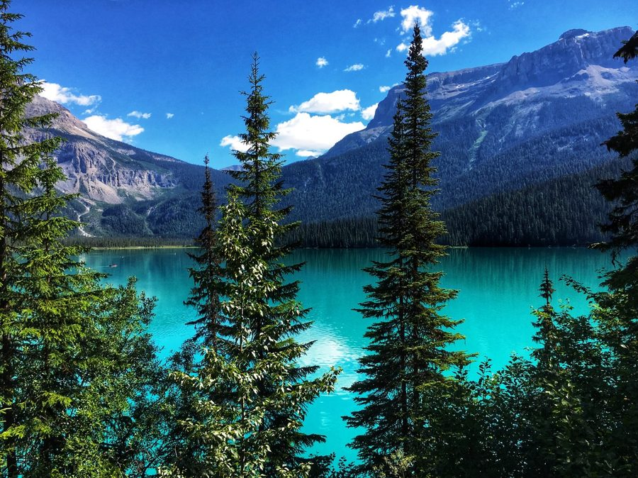
Emerald Lake
요호 최대 호수. 호수를 한 바퀴 도는 5.2km 평지 산책로와 통나무 로지가 있다.
기대이름 그대로 짙은 에메랄드빛. 서향이라 늦은 오후 빛에 색이 가장 살아난다.
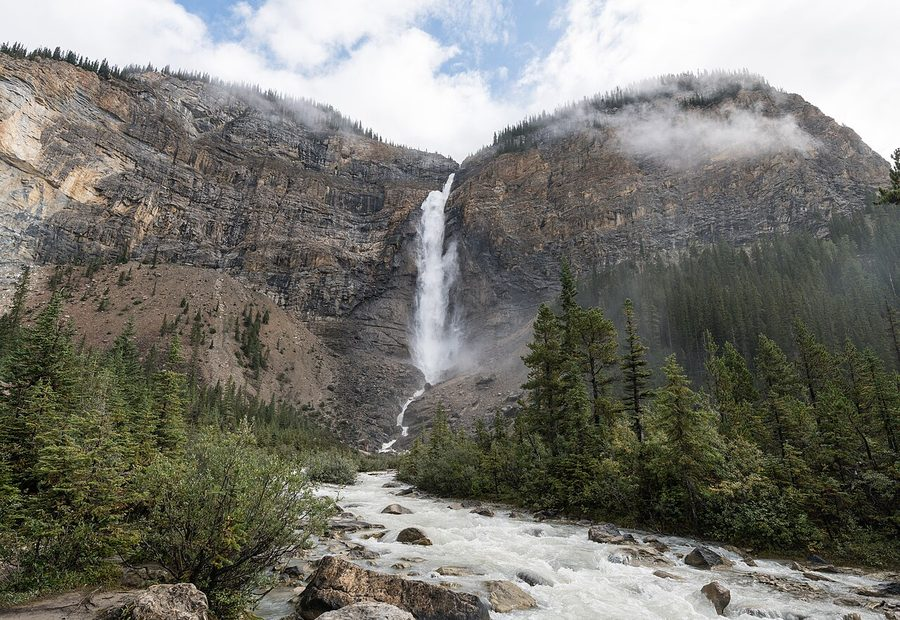
마감진입로 10/13 폐쇄 · 헤어핀 13kmTakakkaw Falls
낙차 373m로 캐나다에서 두 번째로 높은 폭포. 주차장에서 10분 걸으면 폭포 아래에 선다.
기대빙하 융빙수가 절벽에서 그대로 쏟아진다. 물보라가 닿을 만큼 가까이 간다.
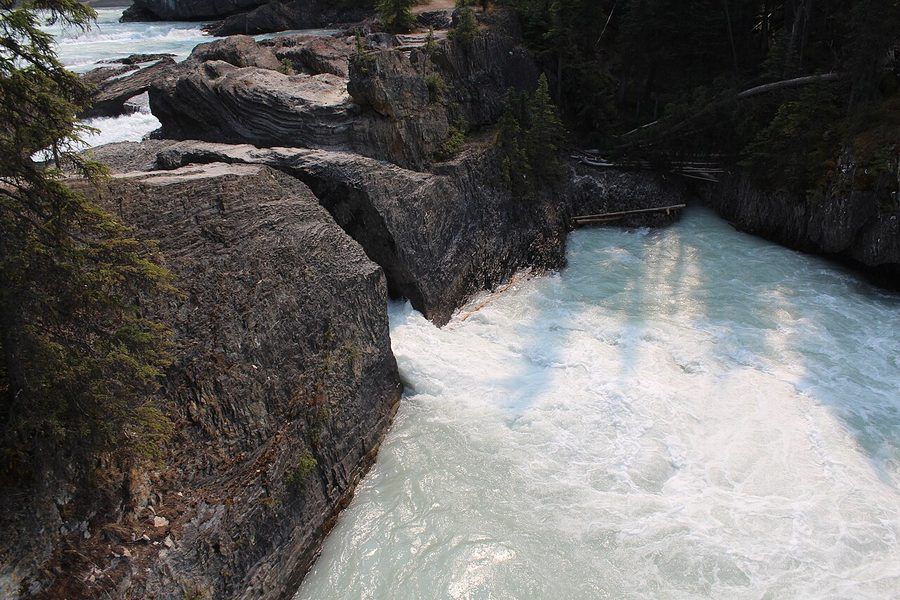
Natural Bridge
키킹호스강이 석회암을 뚫어 만든 천연 다리. 주차 후 3분이면 닿는다.
기대바위 구멍으로 강물 전체가 빨려 들어간다. 짧지만 강렬하다.
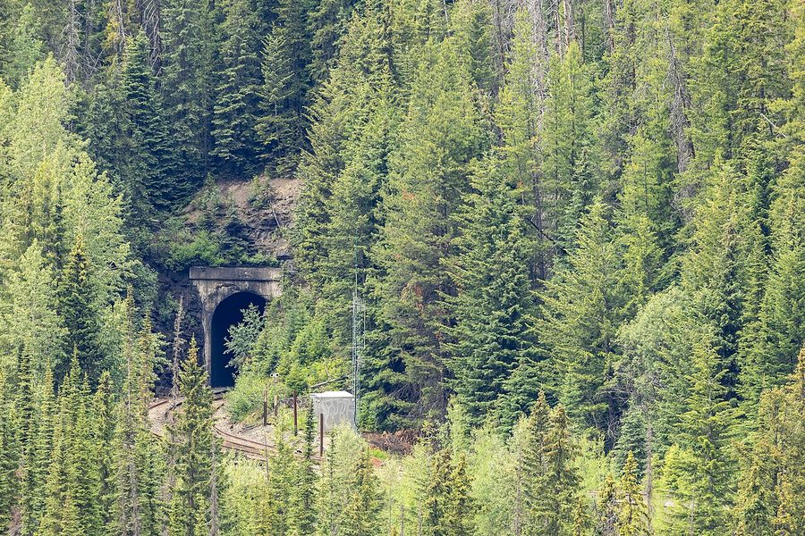
Spiral Tunnels
급경사를 완화하려고 산속을 8자로 파고든 1909년 철도 터널을 내려다보는 전망대.
기대열차가 지나면 같은 열차의 머리와 꼬리가 동시에 보인다. 안 지나가면 그냥 산이다.
ZONE 05 · Icefields Parkway
밴프에서 편도 1시간 25분–2시간 20분 7곳
세계 10대 절경 드라이브. 하이라이트는 남쪽 절반에 몰려 있고, 북쪽으로 갈수록 비용이 급격히 커진다.
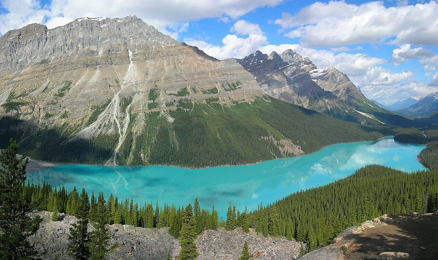
Peyto Lake
보우 서밋 전망대에서 내려다보는 빙하호. 주차장에서 포장길로 15분 오른다.
기대늑대 머리 모양의 형광 청록. 아이스필즈 파크웨이 전체에서 가장 유명한 장면이다.
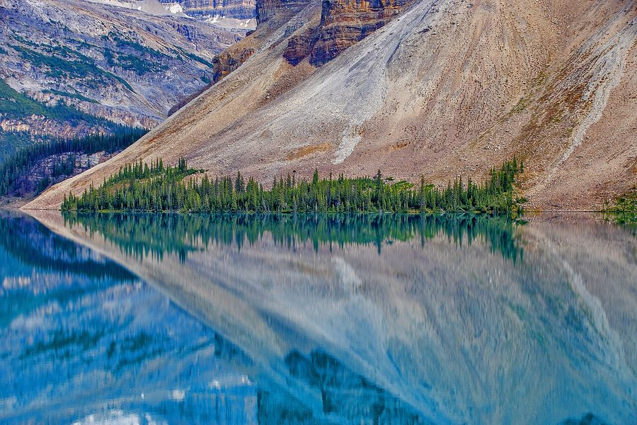
Bow Lake & Crowfoot Glacier
도로 바로 옆에 붙은 큰 호수. 건너편 산에 빙하가 통째로 걸려 있다.
기대차에서 내리면 곧바로 이 장면이다. 호숫가 로지 앞이 점심 자리로 좋다.
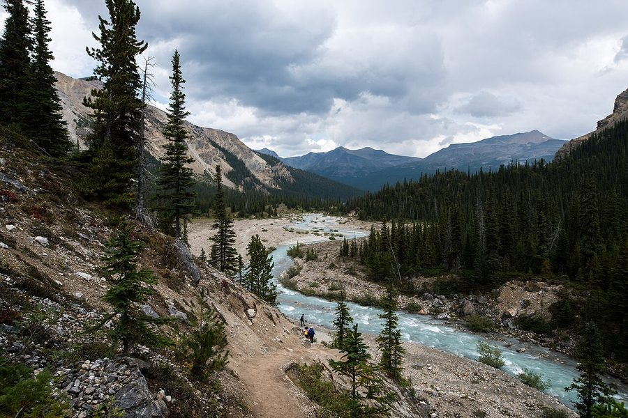
조건2025년 낙석 — 폭포 접근 금지Bow Glacier Falls
보우 레이크 호숫가를 따라 걷다 빙퇴석을 올라 빙하 폭포까지. 왕복 8.8km, 고도 190m.
기대빙하가 녹아 쏟아지는 폭포 바로 아래까지 걸어 들어간다. 설상차 없이 빙하에 가장 가까이 가는 방법.
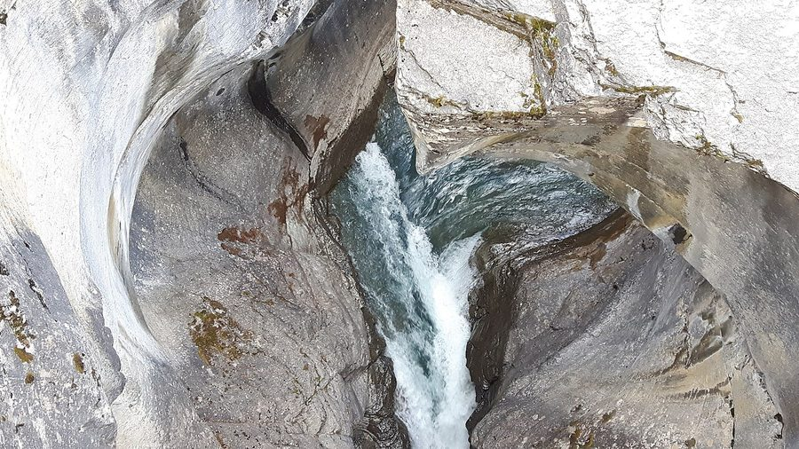
Mistaya Canyon
물이 석회암을 나선형으로 깎아낸 좁고 깊은 협곡. 주차 후 내리막으로 10분.
기대폭 1~2m 틈으로 강 전체가 쏟아져 들어간다. 관광객이 적어 여유롭다.
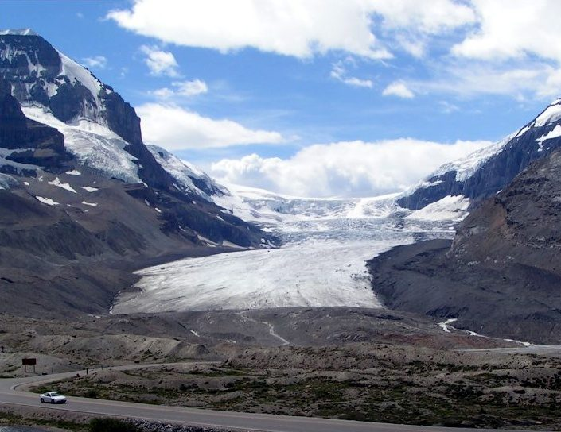
마감10/12 마감 · 사전 예약 필수Athabasca Glacier · Ice Explorer
초대형 설상차를 타고 아타바스카 빙하 위로 올라가 로프로 구획된 안전구역을 걷는다. 스카이워크가 포함된다.
기대실제 빙하 위 체류는 20~30분. 밴프에서 왕복 4시간 40분을 쓸 값어치가 있는지가 판단 지점이다.
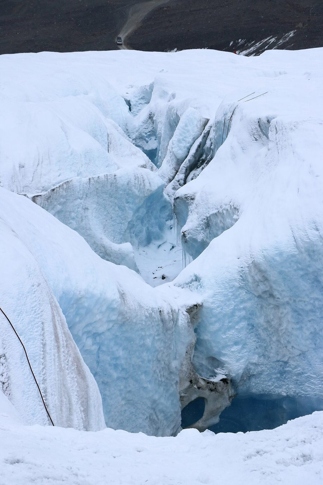
마감10/12 마감 · 09:45·14:00 · CAD 131Athabasca IceWalks
ACMG 인증 산악가이드와 하부 빙하를 직접 걷는다. 왕복 5km, 고도 200m이고 빙하 위에서만 두 시간을 보낸다.
기대크레바스와 빙하 속으로 쏟아지는 물랭을 코앞에서 본다. 설상차와는 완전히 다른 경험이다.
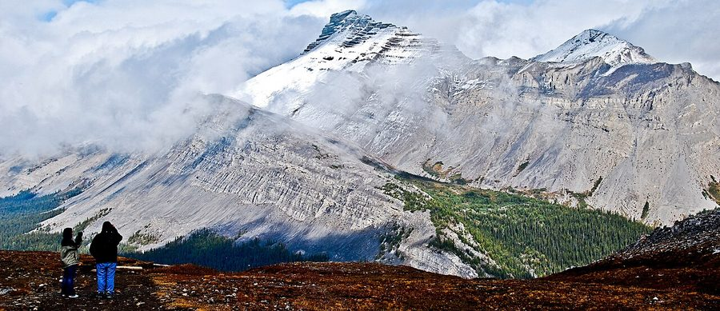
조건10월 강풍·적설 잦음Parker Ridge
왕복 5km의 지그재그 오르막. 능선을 넘어서면 반대편 계곡이 통째로 열린다.
기대새스캐처원 빙하가 계곡을 가득 채운 전경. 능선 위라 바람과 눈이 잦다.
ZONE 06 · Kootenay NP · BC
밴프에서 편도 45분–1시간 40분 3곳
캐슬 정션에서 남쪽으로 갈라진다. 존스턴 캐니언 바로 옆이라 반나절로 붙이기 쉽다.
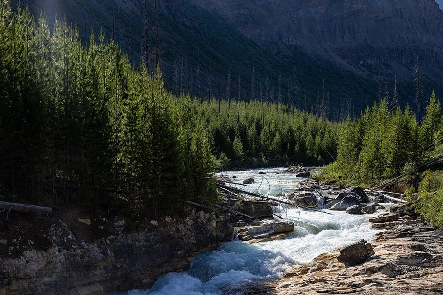
Marble Canyon
백색 백운암을 깊이 30m로 파고든 슬롯 협곡. 다리 일곱 개를 건너며 왕복 800m를 걷는다.
기대존스턴 캐니언과 구조는 비슷한데 사람이 훨씬 적다. 끝에 파크스캐나다 빨간 의자가 놓여 있다.
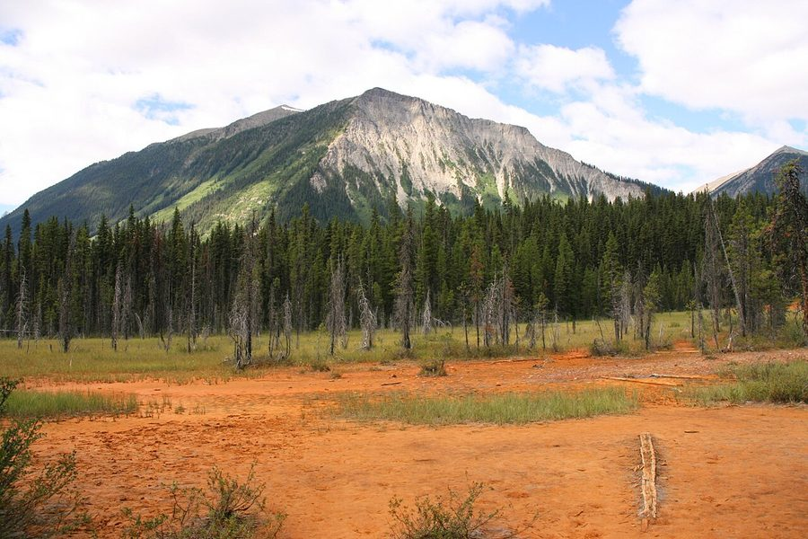
Paint Pots
철분이 산화해 진흙을 붉고 노랗게 물들인 광천 웅덩이. 왕복 3km 평지.
기대로키에서 유일한 지형이다. 원주민이 안료로 쓰고 20세기 초 채굴하던 흔적이 남아 있다.
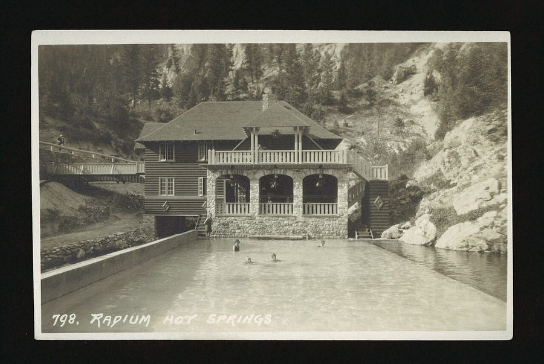
조건편도 1시간 40분Radium Hot Springs
협곡 사이에 자리한 노천 온천 풀. 밴프 어퍼 핫스프링스가 휴장이라 대체지로 거론된다.
기대온천 자체는 좋지만 편도 1시간 40분이다. 이번 일정에는 사실상 무리.
ZONE 07 · Canmore & Kananaskis
밴프에서 편도 25분–1시간 40분 7곳
국립공원 밖이라 입장료가 없고 사람이 적다. 공항 가는 방향이라 마지막 날 아침에 유리하다.
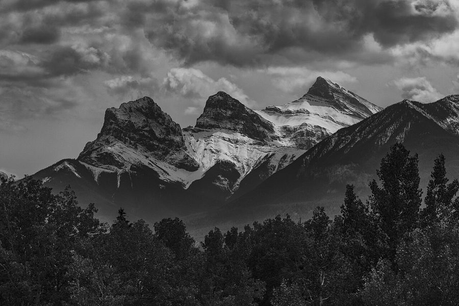
Three Sisters Viewpoint
캔모어의 상징인 세 봉우리를 개울 건너에서 보는 지점. 주차 후 5분이면 도착한다.
기대아침 빛이 세 봉우리를 정면으로 때린다. 공항 가는 날 아침에 시간 손실 없이 들른다.
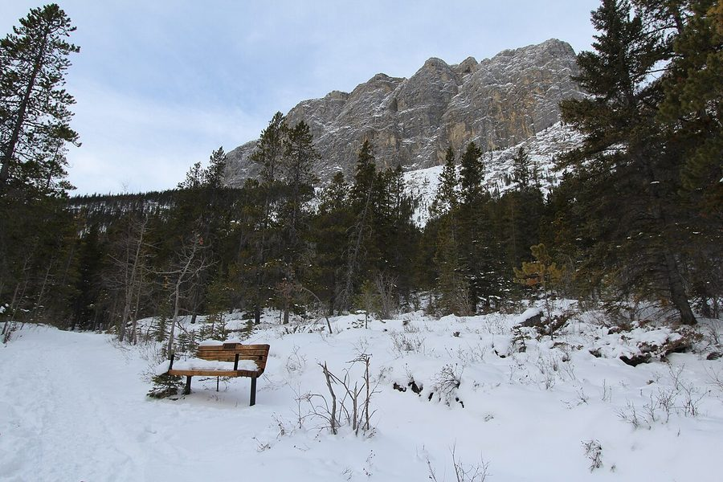
Grassi Lakes
캔모어 뒷산의 청록 소호수 두 개. 왕복 4km이고 폭포를 지나는 길과 임도 두 갈래가 있다.
기대국립공원 밖이라 입장료가 없고 사람도 적다. 물빛은 유명 호수에 밀리지 않는다.
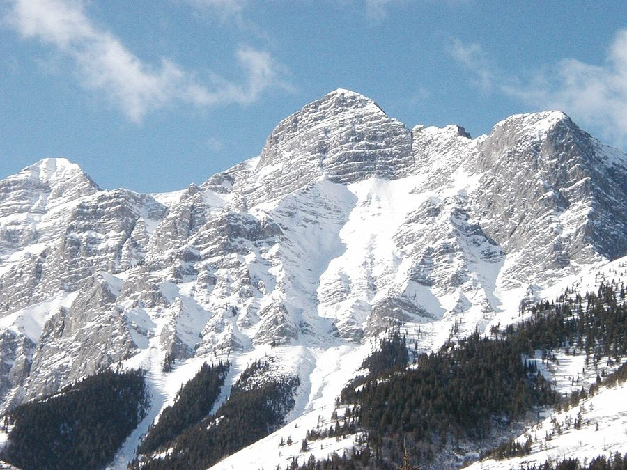
조건예약 필수 · 수영복 지참Kananaskis / Canmore Nordic Spa
야외 온수풀과 사우나, 냉탕을 순환하는 노르딕 스파. 밴프 어퍼 핫스프링스 휴장의 대안이다.
기대산을 보며 온탕에 몸을 담근다. 하루 종일 운전한 날 저녁에 값어치가 가장 높다.
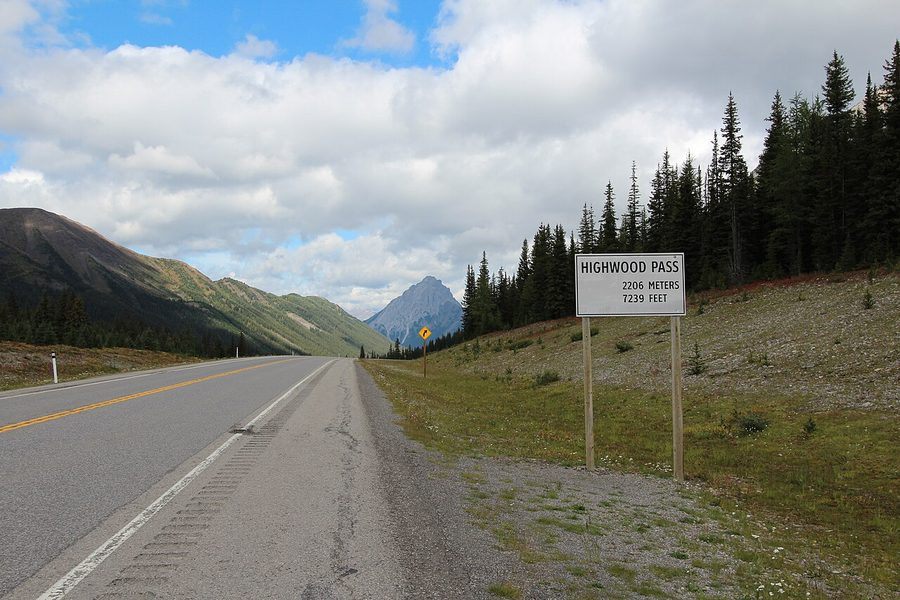
Highwood Pass
해발 2,227m로 캐나다에서 가장 높은 포장도로. Hwy 40을 타고 넘어간다.
기대고산대 풍경을 차로 통과한다. 12월부터 6월 중순까지 폐쇄라 10월은 막차에 가깝다.
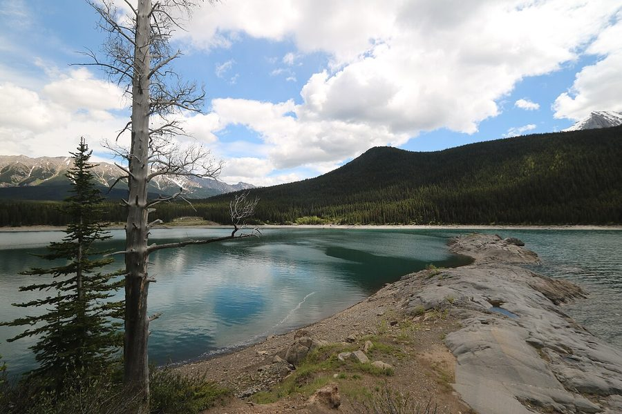
Upper Kananaskis Lake
인적 드문 대형 산정 호수. 호수를 도는 트레일과 피크닉장이 있다.
기대밴프급 경관에 사람은 10분의 1. 입장료도 없다.
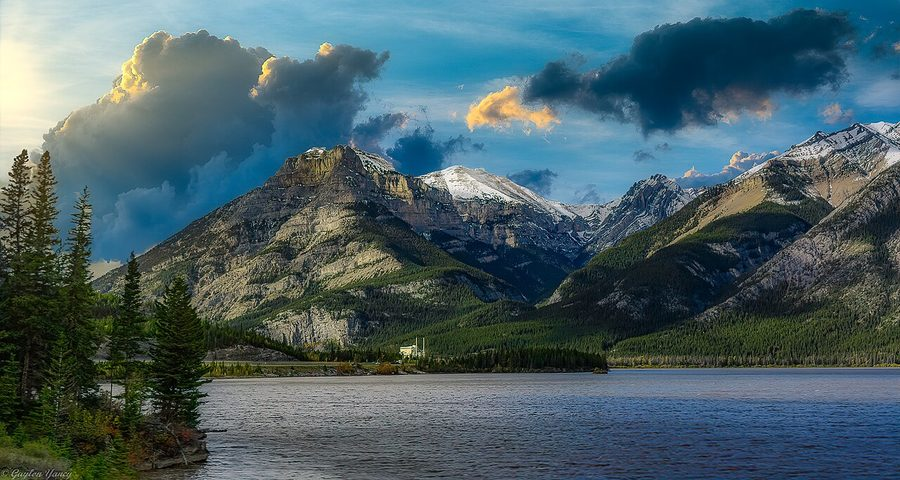
Barrier Lake
Hwy 40 초입의 인공 저수지. 도로변에 전망 주차장이 있다.
기대청록 수면 위로 마운트 볼디가 선다. 캐나내스키스로 들어가는 관문.
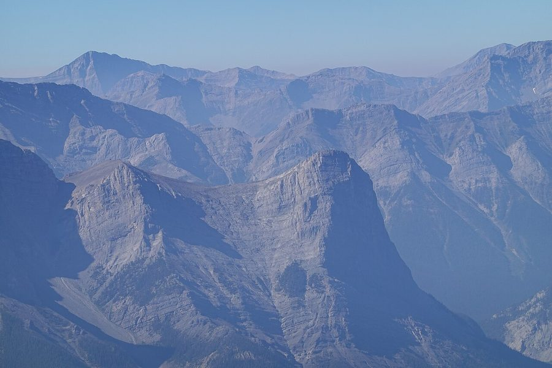
조건급경사 · 고도 810mHa Ling Peak
왕복 7.8km에 고도 810m를 올리는 급경사 하이킹. 계단과 난간이 잘 정비돼 있다.
기대정상에서 캔모어와 보우 밸리 전체가 발밑에 깔린다. 다만 이번 일정에는 시간이 없다.
조건에 맞는 곳이 없다. 필터를 풀어보자.